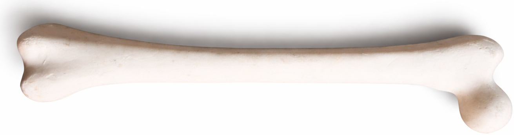

Femur Lab
1. Maximum Length
2. Physiological Length
3. Trochanteric Length
4. Middle Shaft Diameter
5. Head Transverse Diameter
6. Head Vertical Diameter
7. Collodiphysial Angle
8. Femoral Torsion Angle
9. Femur Indices

Drag
Enter Measured Values to Calculate Femur Indices
Shaft Slenderness Index (Maximum Length)
Shaft Slenderness Index (Physiological Length)
Physiological to Maximum Length Index
Trochanteric Proportion Index (Max Length)
Trochanteric Proportion Index (Physiological Length)
Check Result
0
cm
Check Result